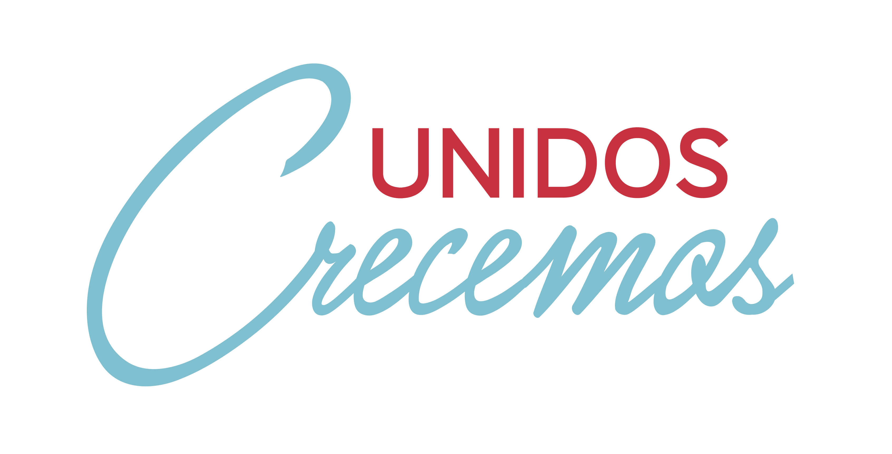

<ion-header>
	<ion-toolbar class="header-toolbar">
		
	</ion-toolbar>
</ion-header>


<ion-content class="ion-padding">
	<ion-list>
		<ion-item *ngFor="let option of appPages" [routerLink]="[option.url]" color="cbba">
			<ion-avatar item-start>
				<ion-icon name="{{option.icon}}" color="danger"></ion-icon>
			</ion-avatar>
			<h4><b>{{ 'Menu.' + option.title | translate}}</b></h4>
		</ion-item>
	</ion-list>
</ion-content>

<ion-footer>
	<ion-toolbar>
		<ion-row>
			<ion-col col-6 class="bck-cbba"></ion-col>
			<ion-col col-6 class="bck-danger"></ion-col>
		</ion-row>
		
	</ion-toolbar>
</ion-footer>